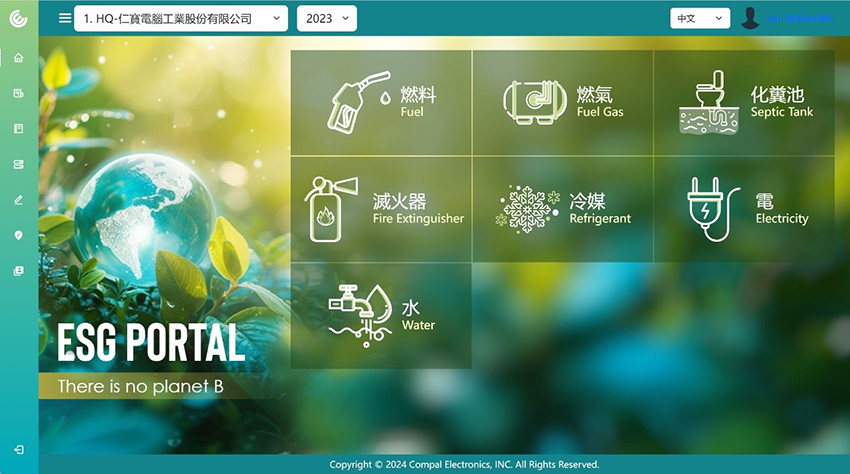

近年各國相繼承諾淨零排放目標，並積極制定減碳相關政策。台灣於2023年8月7日成立「台灣碳權交易所」，歐盟預計同年10月試行碳邊境調整機制（CBAM）、其減碳趨勢已不可擋。
ESG專欄於前期介紹的「什麼是碳中和、淨零排放（NET ZERO）？我們又能做些什麼呢？」專刊中；大家會不會好奇在設定這些目標前，自己所屬的企業、組織每年排放多少溫室氣體？有哪些營運或製造過程會產生大量的溫室氣體？為了有所依據，企業必須進行碳足跡carbon footprint盤查，包括營運過程、生產製造。究竟企業的碳排多少，最後才能達到碳中和與淨零的目標？企業為落實減碳行動開始進行碳盤查之前（Carbon Footprint Verification，簡稱CFV），首先必須要知道「碳足跡」該怎麼算。
碳足跡是甚麼？
碳足跡（Carbon footprint）也稱為溫室氣體足跡（Greenhouse gas footprint）指的是由個人、事件、機構、服務、地點或產品產生的溫室氣體（GHG） 排放總量，以二氧化碳當量（CO2）表示。溫室氣體包括含碳氣體如二氧化碳和甲烷，會經由燃燒化石燃料、土地清理以及生產及耗用食品、製成品、材料、木材、道路、建築物、運輸和其他服務而排放。碳足跡的概念和名稱源自生態足跡概念，生態足跡之名由在英屬哥倫比亞大學任教的William E. Rees和Mathis Wackernagel於1990年代提出。碳足跡通常以每年排放的噸數（二氧化碳當量）表達，但生態足跡通常是以地球的更新來作報告。評估方式是根據地球每人的生態足跡所耗用的資源，需要幾個「地球」才足夠應付。碳足跡是生態足跡中的一部分。碳足跡僅衡量導致氣候變化的氣體排放，較生態足跡受更多的關注。
衡量碳足跡
個人、國家或機構的碳足跡可依據其溫室氣體排放的數量做評估。碳排放生命週期評估或其他統計作業被稱為碳排放會計。一旦知道碳足跡的數量，就可制定將其降低的策略 - 例如透過技術發展、能源效率改進、更完善的流程和產品管理、改採綠色公共或私人採購（GPP）、碳捕集與封存、消費策略和碳補償等。
網路上提供有幾個免費計算個人碳足跡的應用工具，這些網站或多或少會要求使用者回答有關飲食、交通選項、房屋大小、購物和娛樂活動、用電量、供暖以及如烘乾機和冰箱等設備方面的詳細問題。而在企業方面，計算產業、產品或服務的碳足跡是項複雜的工作；國際標準化組織有個名為ISO 14040：2006的標準，此標準具有針對生命週期評估（LCA）做研究的框架。而ISO 14060系列標準為溫室氣體排放和清除在量化、監測、報告和確認或驗證提供更複雜的工具。另一種是通過溫室氣體盤查議定書，此為一套用於跟蹤價值鏈中範疇1、2和3排放的溫室氣體排放的標準。
1. 直接碳排放（或稱範疇1碳排放）是由生產產品或提供服務的場所直接產生的排放。其中一例是與現場燃燒燃料相關的排放。而 在個人層面，私家車或燃氣灶的排放屬於這一類。
2. 間接碳排放是來自過程的上游或下游的排放（或稱範疇2或範疇3排放）註1&2。
上游間接碳排放的例子包括：
• 材料/燃料的交通運輸所產生
• 在生產場所之外使用的任何能源所產生
• 生產場所外產生的廢棄物（垃圾）所產生
下游間接碳排放的例子包括：
• 任何報廢過程或處置所產生
• 產品和廢棄物的交通運輸所產生
• 與銷售產品相關的排放
註1：範疇2排放是與現場購入使用的電力、熱或蒸汽間接相關的排放。
註2：範疇3排放是來自組織活動使用，但非由自身生產或控制的所有其他間接
排放。
企業該如何計算碳足跡？
產品生產過程可分為五階段，原料階段、製造階段、運輸階段、使用階段以及最後回收階段，而碳足跡計算方式就是將各階段的每一項目，乘以排放係數後得到的數字即是CO2e，再將每一階段的總和加總一起，就是產品的碳足跡。
仁寶2010年起，每年持續進行台灣及中國廠區ISO14064-1溫室氣體盤查與外部查證，因應改版，2020年起採用IPCC 2013年公佈之第5次評估報告GWP值，燃料預設係數主要採用IPCC 2006年版本，廠區電力係數則採用台灣經濟部能源局和中國國家發展改革委員會或最新公告數值。
自2021年起開始將溫室氣體排放的範疇3納入盤查，藉由計算各階段的碳排放量，包括原料開採、製造、配送、使用和廢棄物處理等過程，進一步擴大對氣候的影響力。這將幫助仁寶了解自身上下游活動對排放量的貢獻情況，並識別價值鏈中排放量較高的活動，從而提供更精確的指引，以實施減排策略。我們期望通過引入低碳製造、推動低碳產品設計、加強永續供應鏈管理流程，以及應用ESG關鍵績效指標構建公司碳管理系統等方式，實現仁寶企業營運的碳中和願景。想了解公司範疇1、2、3的數據，您可以至Compal ESG網站查詢，https://www.compal.com/CSR/ZH/page.aspx？Id=22。
仁寶積極參與減碳計畫，ESGO與IT部門建立碳數據管理資訊平台，數位化管理並即時監控碳排數據，逐步實現減碳目標。
|  |
| 碳數據管理資訊平台介面。 |
參考資料 :
• 碳足跡
https://zh.wikipedia.org/zh-tw/%E7%A2%B3%E8%B6%B3%E8%B7%A1
• 碳足跡是什麼？減碳已成國際趨勢，3分鐘帶你認識「碳」議題！
https://www.aph-epower.com/post/carbonfootprint
• Compal ESG
https://www.compal.com/CSR/ZH/page.aspx？Id=22